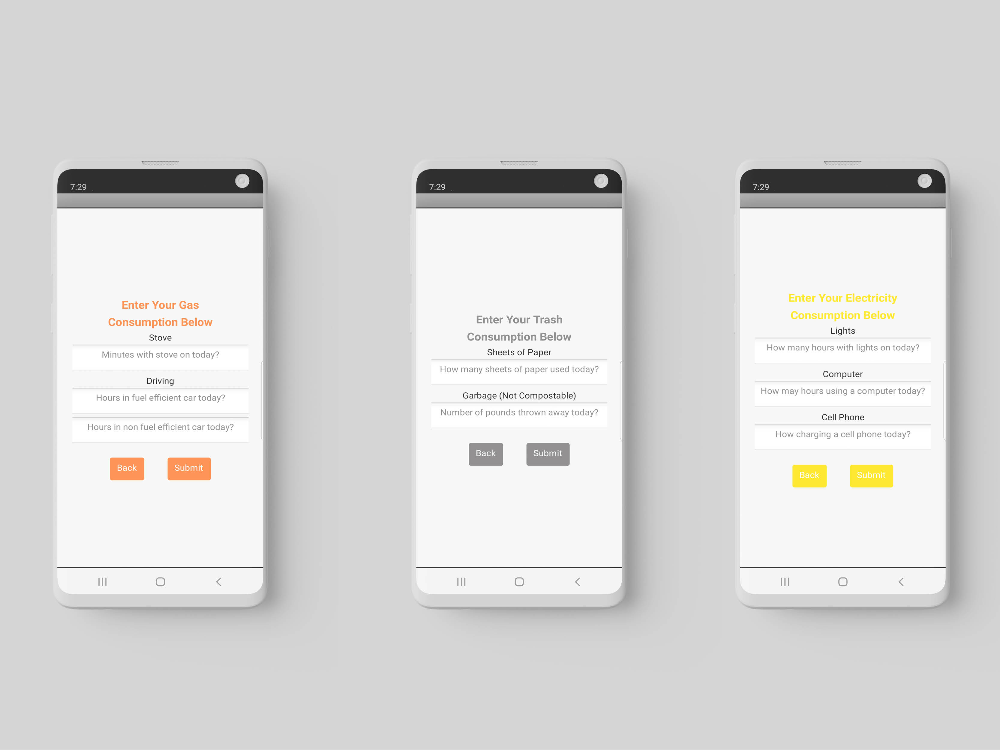
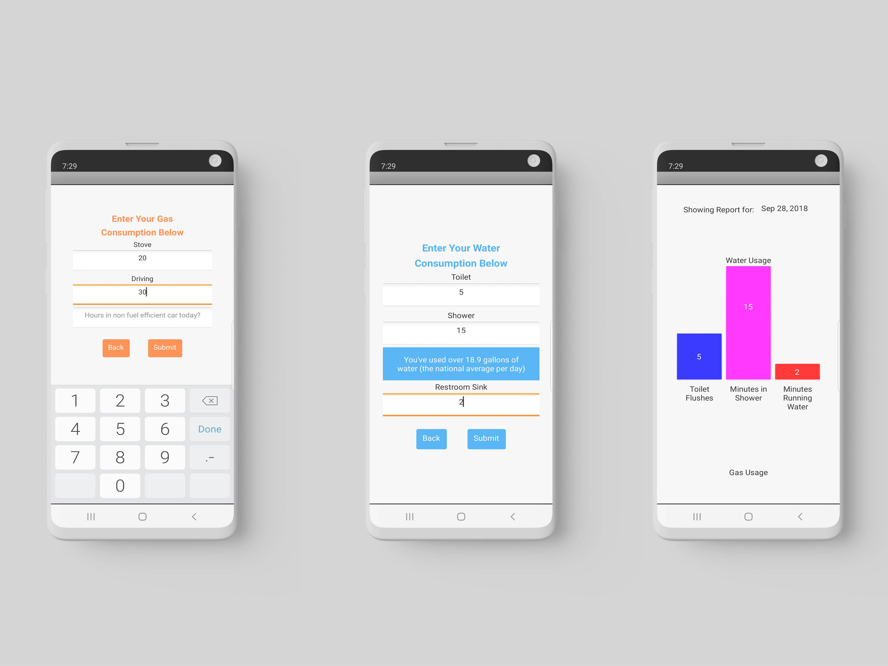

Carbon Footprint Calculator is a daily use app in which the user can track their carbon footprint by recording their water, gas, trash, and electric consumption each day. Their personal usage is compared to the national average and, if they go over, they are notified on how they can lower their consumption. After their daily usage is entered, a daily report is generated so that can compare their usage between days.
Created in collaboration with Marissa Jasso
left: homepage middle: selection screen right: water consumption screen
left: gas consumption middle: trash creation right: electricity consumption screen
left: entering daily information middle: overage notification right: daily report screen
scan on any android device to download
Througb multiple rounds of user testing, we were able to develop our user interface and experience design including: improving keyboard usability, shortening textbox hint length, visualizing daily report in a bar graph rather that in a list format, and readability.
project proposal